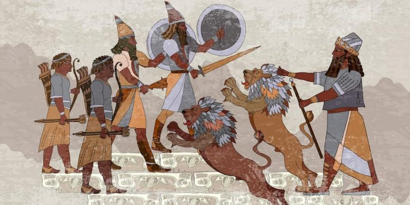
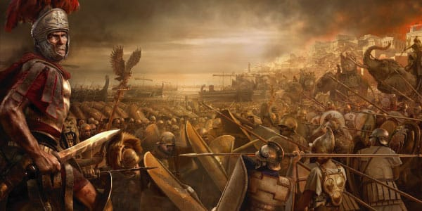

¿De q trata el género épico?
La épica, o sea, el género épico de la literatura, es una de las formas más antiguas de narrativa que se conoce, cuyas obras normalmente voluminosas tratan sobre hechos míticos o legendarios, como hazañas de héroes y grandes guerras, que a menudo sirvieron de relato fundacional de las culturas antiguas.
Qué es el género épico? La épica, o sea, el género épico de la literatura, es una de las formas más antiguas de narrativa que se conoce, cuyas obras normalmente voluminosas tratan sobre hechos míticos o legendarios, como hazañas de héroes y grandes guerras, que a menudo sirvieron de relato fundacional de las culturas antiguas.
Si bien todas las grandes civilizaciones antiguas tuvieron sus propios cantos heroicos y sus propias narraciones épicas, no eran iguales. Los primeros en estudiar formalmente las características del género y diferenciarlo
su definocion
El género épico, también llamado simplemente poesía épica, es la clasificación más antigua que se conoce y combina aspectos del género narrativo, pero ocupa un lugar muy importante en la historia literaria.
La poesía épica es uno de los géneros literarios más importantes porque se considera uno de los primeros elementos utilizados en los primeros escritos. Se puede definir como un género literario que narra en verso las hazañas históricas de héroes reales y mitos. El evento se refiere a seres que pueden tener habilidades sobrehumanas y está construido para constituir un ideal humano que hay que vivir.El género épico, también llamado simplemente poesía épica, es la clasificación más antigua que se conoce y combina aspectos del género narrativo, pero ocupa un lugar muy importante en la historia literaria.
Un postura esencial de oriente variedad es que nos ha legado golpe a revelación histórica sumamente insigne de poetas griegos que dejaron insistencia de la biografía cotidiana, el creencia y la sabiduría de su época.